Graphics Foundations
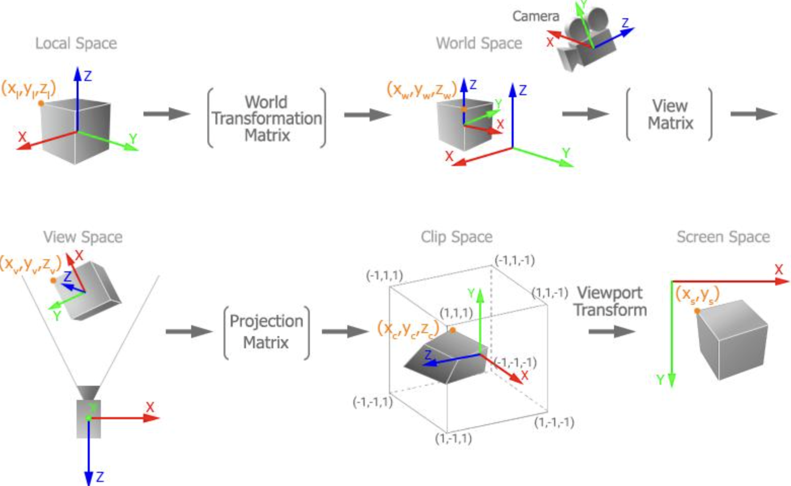
Graphics Foundations
Studied the mathematical foundations used to represent
and manipulate objects within a 3D scene.
-
Vectors & Algebra:
Points, vectors, dot products, cross products,
lines, planes, and geometric calculations.
-
Coordinate Spaces:
Object, world, camera, and screen coordinate systems.
-
Scenes:
Scene organization, object relationships,
and hierarchical scene graphs.
-
Cameras:
Camera position, orientation, image planes,
field of view, and projection.
-
Transformations:
Translation, rotation, scaling, and
transformation order.
Ray Tracing
Explored how rays are generated from a virtual camera,
intersect scene geometry, and recursively simulate
different interactions with light.
-
Ray Generation:
Generated camera rays corresponding to pixels
on the image plane.
-
Ray Intersections:
Calculated intersections with spheres, planes,
cylinders, discs, and other geometry.
-
Closest Hit:
Determined the closest valid intersection
visible from the camera.
-
Secondary Rays:
Used additional rays for reflections,
refractions, and shadows.
-
Numerical Precision:
Used epsilon values and intersection constraints
to handle floating-point issues.
Ray Generation & Secondary Rays
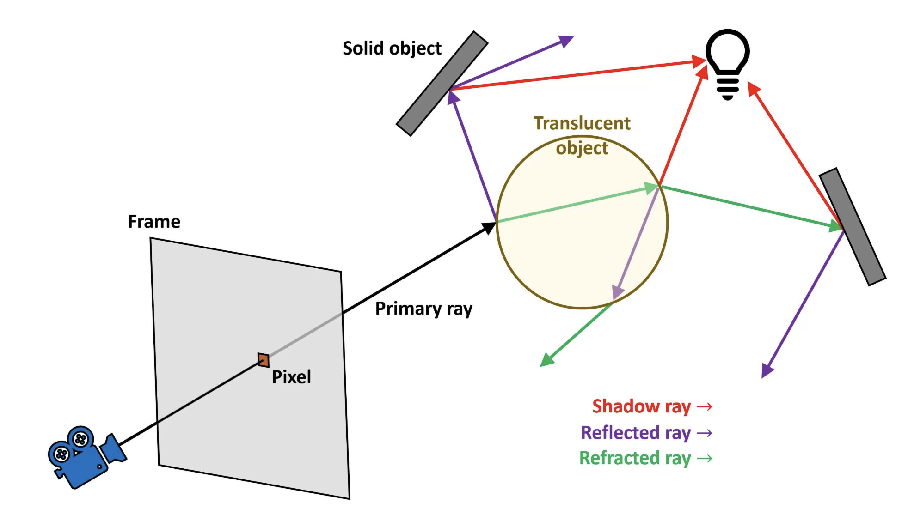
Ray Tracing & Lighting
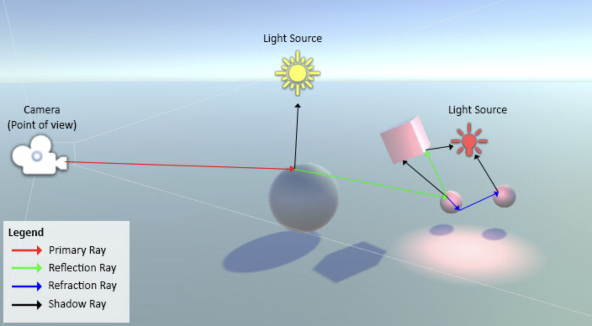
Shading, Shadows & Textures
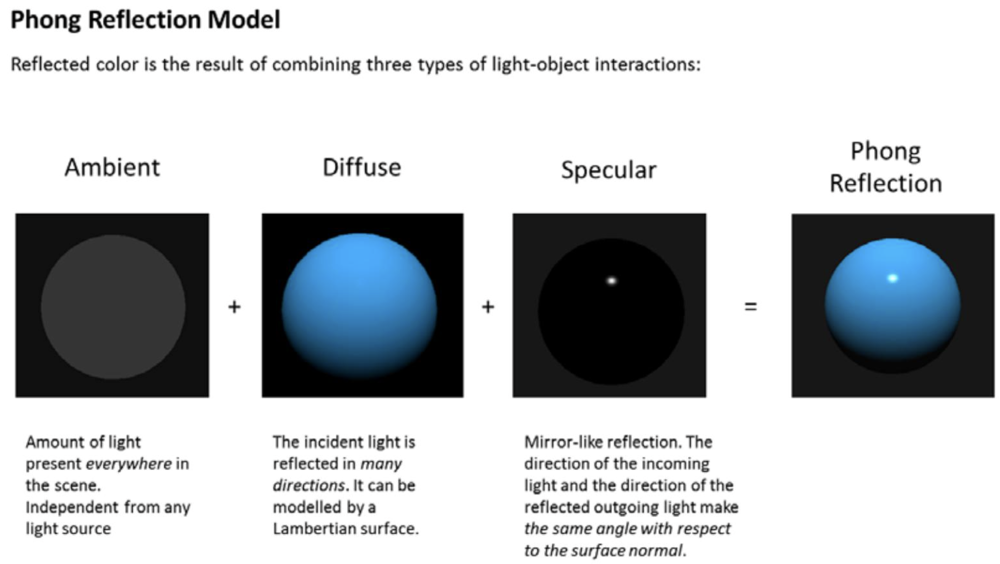
Shading, Shadows & Textures
Studied how lighting, surface orientation, materials,
and textures determine the appearance of rendered
geometry.
-
Phong Shading:
Ambient, diffuse, and specular lighting.
-
Surface Normals:
Used surface orientation to calculate
lighting response.
-
Light Sources:
Ambient, point, directional, and spot lights
with attenuation.
-
Shadows:
Shadow rays, multiple lights, hard shadows,
and soft shadows.
-
Texture Mapping:
UV coordinates, texture sampling, and
interpolation.
-
Materials:
Combined surface colors, textures, reflectance,
and lighting properties.
Triangles & Meshes
Studied how complex 3D surfaces are represented
efficiently using collections of vertices and triangles.
-
Triangles:
Triangle geometry, intersections, normals,
and barycentric coordinates.
-
Meshes:
Represented complex objects using connected
collections of triangles.
-
Interpolation:
Interpolated surface properties across
triangle interiors.
-
Bounding Volumes:
Used spatial bounds to reduce unnecessary
intersection calculations.
Triangles & Meshes
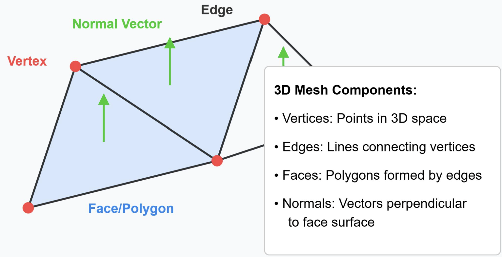
Rasterization & Z-Buffering
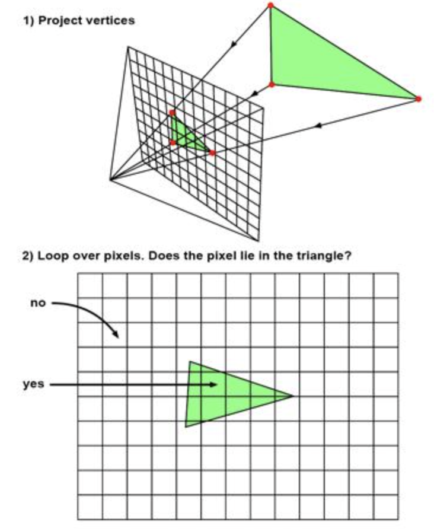
Rasterization & Z-Buffering
Studied the traditional real-time graphics pipeline
used to convert projected triangles into visible pixels.
-
Rasterization:
Converted projected triangles into fragments
and pixels.
-
Z-Buffering:
Used depth information to determine which
surfaces are visible.
-
Clipping:
Removed geometry outside the camera's
viewing region.
-
Culling:
Avoided rendering geometry that cannot
contribute to the final image.
-
Anti-Aliasing:
Studied sampling techniques used to reduce
jagged edges and visual artifacts.
Image Processing & Color
Explored digital images as sampled signals and
studied techniques for processing and representing
visual information.
-
Color:
RGB, RGBA, CMYK, HSV, alpha, and gamma correction.
-
Sampling:
Studied pixels as discrete samples of
continuous image signals.
-
Convolution:
Applied image kernels for filtering,
blurring, and edge detection.
-
Frequency Analysis:
Fourier transforms, DFT, FFT, and DCT.
-
Image Compression:
Studied frequency-based techniques used
by formats such as JPEG.
Image Processing & Color
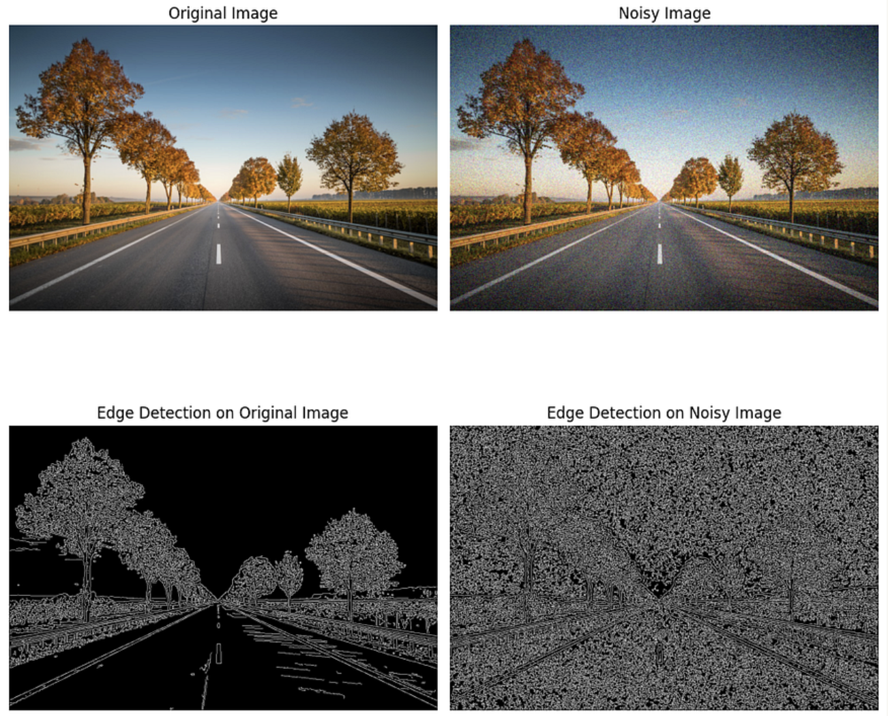
Raymarching & Volumetric Effects
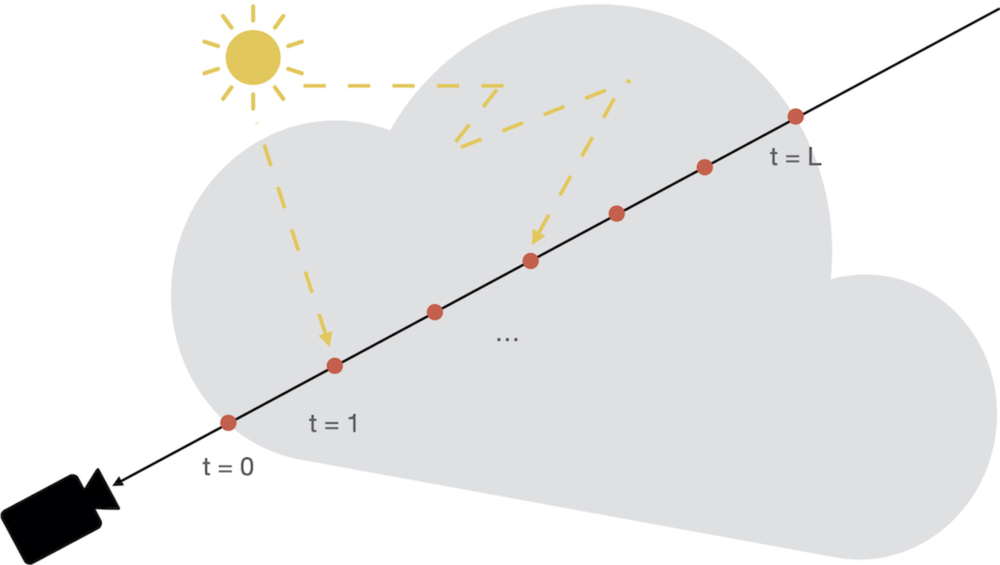
Raymarching & Volumetric Effects
Explored rendering techniques that sample along
rays rather than relying only on explicit
surface intersections.
-
Raymarching:
Progressively sampled points along a ray
through a scene.
-
Volumetric Rendering:
Represented effects such as clouds,
fog, and other participating media.
-
Density:
Used sampled density values to determine
how light travels through a volume.
-
Procedural Effects:
Combined mathematical functions and noise
with volumetric rendering.
Procedural Generation
Studied how controlled randomness and mathematical
algorithms can generate textures, environments,
structures, and visual effects.
-
Pseudo-Randomness:
Used deterministic seeds to create
reproducible random results.
-
Perlin Noise:
Gradient-based noise for terrain,
clouds, and natural textures.
-
Worley Noise:
Cell-based noise for organic and
geometric patterns.
-
Fractal Noise:
Combined multiple noise layers to create
detail across different scales.
-
Random Walks:
Generated paths, caves, rooms,
and other structures.
-
Wave Function Collapse:
Generated layouts using constraints
between neighboring elements.
Procedural Generation
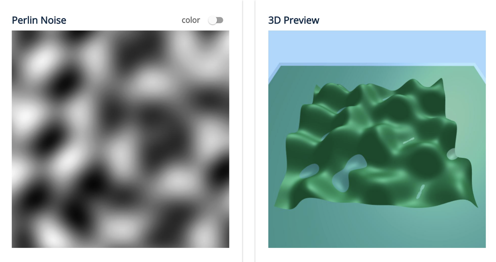
Curves & Animation
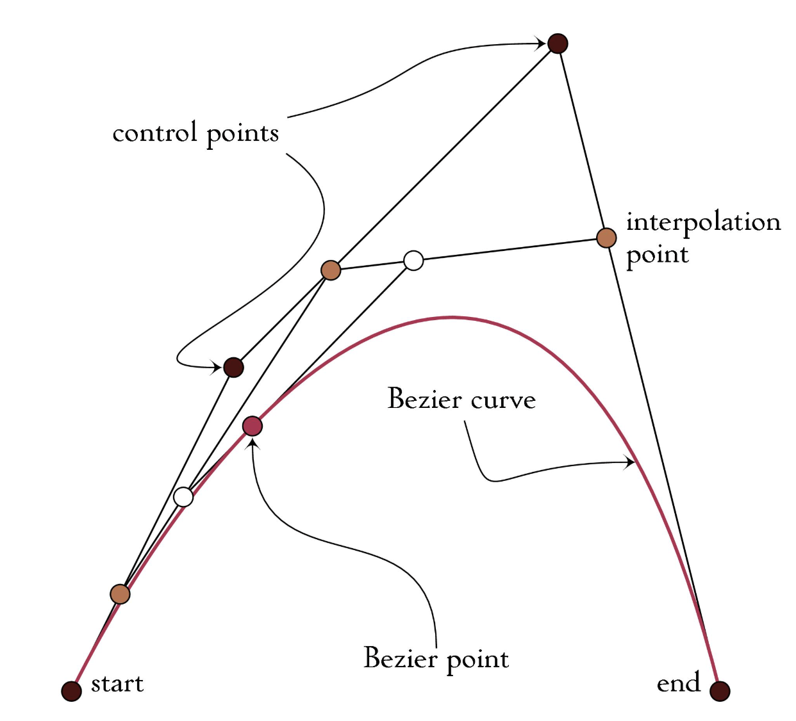
Curves & Animation
Studied mathematical representations of smooth
curves and techniques for creating motion over time.
-
Bézier Curves:
Created smooth curves using control points
and polynomial interpolation.
-
Interpolation:
Generated intermediate values between
positions and transformations.
-
Keyframe Animation:
Defined important poses and interpolated
motion between them.
-
Transform Animation:
Animated translation, rotation, and scale.
-
Rotation:
Studied rotational interpolation and
quaternion-based representations.
GPUs & Real-Time Rendering
Studied the evolution and architecture of GPUs
and how their highly parallel design enables
modern real-time graphics.
-
GPU Architecture:
Parallel processing cores, VRAM,
and memory hierarchy.
-
Graphics Pipeline:
Vertex processing, rasterization,
fragment processing, and image output.
-
Shaders:
Programmable stages for processing
vertices and fragments.
-
CPU vs. GPU:
Compared general-purpose sequential
processing with massively parallel
graphics workloads.
-
Real-Time Graphics:
Balanced rendering quality, performance,
memory, and frame time.
GPUs & Real-Time Rendering
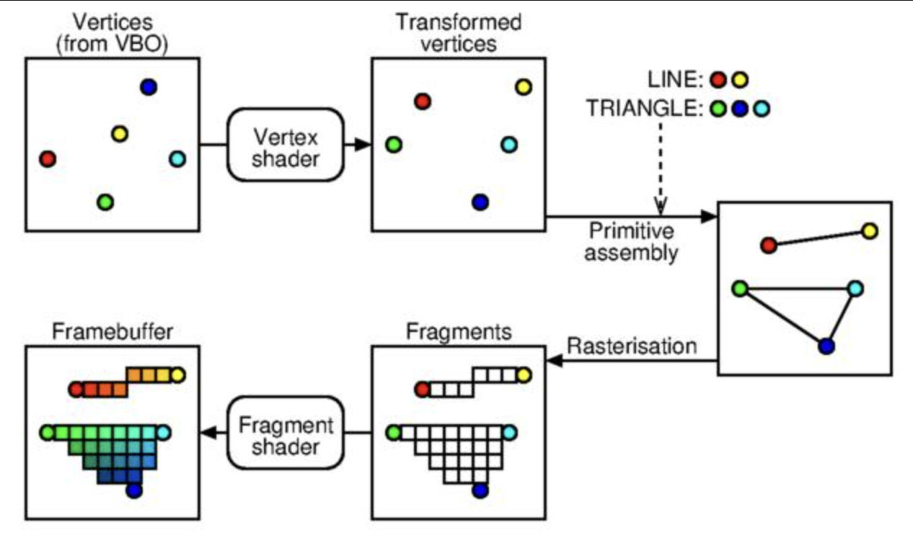
Course Takeaways
CSCI 580 connected the mathematics behind computer
graphics with practical rendering techniques,
covering the complete path from representing
geometry and tracing rays to rasterization,
shading, image processing, animation, and
GPU-based real-time rendering.
These concepts also supported my
From Rays to Reality project,
where I applied ray intersections, camera
simulation, LiDAR sampling, point-cloud generation,
and OpenGL visualization.